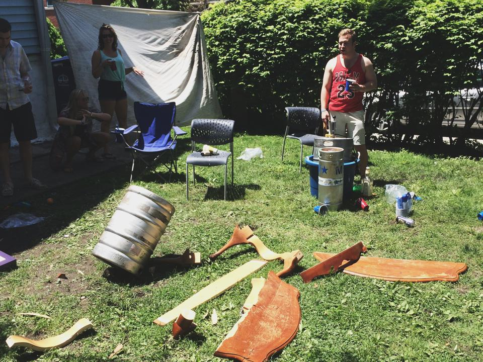

Photo by Jimmy Feterman.
College is not just about tests and homework, it's about learning how to be an adult. While the experience isn't the same for everyone, the stereotypical process involves leaving the comfort of parental domain and entering the realm of personal responsibility. The first leg of this journey is usually a dorm, but the next step for many is an even bigger leap into the "real world:" off-campus living.
This leap could turn into a pitfall, though, if tensions between landlords and tenants arise. Unfortunately, this is not a rare occasion.


Photo provided by Katie Wright.
Good relationship: better than a speeding bullet
Not every off-campus experience is a horror story, though. Katie Wright, a University of Oregon student, said she's always had a good relationship with her landlord.
"You treat them with respect, Wright said regarding landlords. "They're living here too, with a bunch of college students - respect them and their space."
Wright's landlord has returned this respect with caring assistance. On one occassion, a tenant living above Wright accidentally fired a gunshot while cleaning his gun. The shot went through Wright's ceiling. The landlord was quick to respond to the situation.
"Our landlord and the company we were with handled it so well," Wright said. "A couple days after [the incident] they patched the ceiling; they made sure the guy had to move out a week later."
While Wright's experiences have been mostly pleasant, she does know people who have had bad relationships with their landlords. She didn't place the blame on one party or the other, though.
I think it's both," Wright said. "You can't just blame one side, it's a two way street."
While tales of woe exist on the extreme end of the spectrum, for the most part, students like Wright still want to live off campus. A new study from Ball State University concluded that college students from six different college markets would willingly pay 16 percent more in order to live in an off-campus apartment.

Bad relationship: one wild lease
Such experiences haven't been limited to intrepid Wildcats venturing into Evanston, though. Ball State students Katie Reece and Katelyn Miller were in the process of looking for an apartment when they had seemingly found the perfect match. Upon reading the finer points of the lease, though, Reece and Miller discovered that the landlord had included several restrictive clauses. For one, and appliance or electronic device had to be approved by the landlord. What's more, the two girls couldn't have overnight guests over unless they secure the landlord's permission. Faced with those options, they decided not to sign the lease.
Not all students may have this luxury. U.S. News revealed that, thanks to a 38.7 percent increase in student enrollment between 2000 and 2010, many colleges are not able to provide housing for students for all four years. In effect, this makes the off-campus housing market a seller's game.
No universal legislation exists to govern landlord-tenant relationships. Rather, tenant rights differ from state to state are listed by the U.S. department of Housing and Urban Development.
Photo by Jimmy Feterman.
Worst case: of landlords and lawsuits
Coping mechanisms have a breaking point though, and the consequences of a complete communications breakdown can be severe. Emily Burklow, a Weinberg Junior, had to experience the failures of a dysfunctional landlord/tenant relationship firsthand.
Before Burklow even moved in to her house last Summer, there was trash leftover from previous tenants, leaking faucets and broken smoke detectors. Because she was studying abroad, Burklow's roommates were the first to encounter their landlord about the problems.
Described by a neighbor as a "terrible landlord," Burklow attempted to contact her landlord throughout the summer about the mounting issues, including carpenter ants and a door broken off of its hinges. The landlord sent only "cold, unhelpful answers" and allegedly didn't take action to fix problems. Contacting the Off-Campus Life office didn't help either.
Things only got worse. The basement flooded once in the winter and twice in the spring. The stove broke. Repeated emails to the landlord were ignored. Burklow called her landlord an "unstable character," citing the landlord's unexpected trip to Thailand and her insinuation that she wasn't responsible for repairs.
"Because she's so evasive, it's hard to expect a middle ground with her," Burklow said.
When enough was enough, Burklow and her roommates attempted to set up an in-person meeting with their landlord. When they couldn't contact her, one roommate's mother began acting as a lawyer and initiated contact with the landlord in a legal context. While emailing with a lawyer attached ended up solving some of the problems, a lawsuit has progressed regarding other unsolved problems in the house.
In retrospect, Burklow said that treating everything as urgent from the first moment she and her roommates moved in would've helped. Instead, they've had to pick and choose their battles in the months that followed.
"We don't know what landlord-tenant relationships are supposed to look like," Burklow said. "Our parents were the ones who had to tell us to get stuff fixed."
Photo by Nick Arcos.
Landlord's perspective: changes of pace
"I've had my ups and my downs, but honestly it's just refreshing to constantly have the students around me," said RaShia Jones, 46, who has been working as a landlord in Evanston, Illinois for the last 12 years.
Jones is one of three property managers for Evanston Apartments who owns several rental spots across the city of Evanston; however most of their property is centered at the cross section of Foster and Maple, just four blocks away from Northwestern University. "Having our office located under our main rental property keeps us close to the students that lease from us so that we are always available to discuss any issues on hand as well as let us keep an eye on what they do on our properties. It really works out for both parties."
On the topic of parties Jones mentioned that there is a limit placed on the number of people allowed in a unit at a given time, saying that according to the lease she has tenants sign they are not allowed to have more than twice the people living in the space. "I know that they have parties, I'm not dumb. They're in college and they like to have fun but from a legal standpoint I like to be covered as well. We want the safeguards in place in case something does happen and they try to blame us for. "
Adam Snyder, 20, a tenant at the property above the office said that Jones stops often to talk to him and his roommates whenever she might come across them in the parking lot or going in or out of the building and she has some free time to speak. " She is the first landlord I've dealt with and she completely changed the picture I had of a stern authority figure type who just wants my money. She just seems to always have a smile on ."
Snyder also said that his lease included many other perks that him and his roommates were automatically opted into such as a monthly maid service. "At first we thought it was some sort of scam type thing since our building is also the office space for the Dial-A-Maid service but to be honest, I live with three other guys and for maids to come and help keep our place clean is just nice."
"The maid service is the first thing that the students like to question," said Jones. "But it is also the first thing that tell us they loved the most about renting from us when they leave. These college kids don't realize at first what comes with living off-campus for the first time and this helps them transition just that much easier."
Though not your typical landlord, Jones says that she wouldn't want to ever make the switch to renting out only to professional adults. To her, the students become her kids and she likes watching how they grow over the months and years that they rent from her. "I like being able to be the first landlord that these kids are able to deal with. There are a lot of sharks out there and I want to make sure that they know that not everything they hear about the tenant-landlord relationship is true. There are a couple of us nice ones out there!"